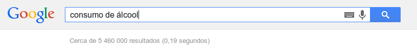
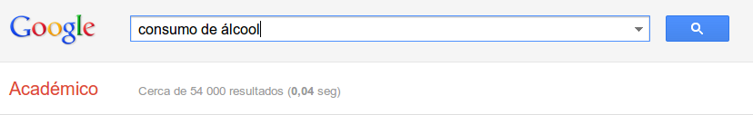

Tema e Objectivo:
Consumo de álcool
O nosso trabalho foca sobre as pesquisas de investigação de informação no campo do consumo de álcool e tem como objectivo a interpretação final sobre a credibilidade dos factos investigados, relativos às fontes determinadas e diferentes formas de pesquisa
pesquisa livre
Objectivos
-
5 a 10 referências:
- Argumentar os critérios de escolha destes artigos
Referência 5
- Link:
http://www.todopapas.com.pt/gravidez-e-alcool.php
- Título:
Gravidez e álcool, uma combinação perigosa para o seu bebé
- Autor:
TodoPapas: Guía de embarazo, bebé y desarrollo infantil del niño para embarazadas y padres.
- Ano:
2013
- Palavra-chave de pesquisa:
consequências do álcool durante a gravidez
Referência 6
- Link:
http://www.min-saude.pt/pnprpla.pdf
- Título:
Plano Nacional para a Redução dos Problemas ligados ao Álcool
- Autor:
Ministério da saúde
- Ano:
2009
- Palavra-chave de pesquisa:
solução mais eficaz para a diminuição do consumo excessivo de álcool
pesquisa google académico
Objectivos
-
5 a 10 referências:
- Argumentar os critérios de escolha destes artigos
Referência 1
- Link:
http://www.scielo.oces.mctes.pt/scielo.php
- Título:
Adolescentes e álcool: Estudo do comportamento de consumo de álcool na adolescência
- Autor:
Isabel Trindade e Rita Correia (Consulta de Psicologia, Centro de Saúde da Parede.)
- Ano:
2013
- Palavra-chave de pesquisa:
consumo excessivo de álcool na adolescência
Referência 2
- Link:
http://bases.bireme.br/cgi-bin/wxislind.php
- Título:
A reabilitação psicossocial na atenção aos transtornos associados ao consumo de álcool e outras drogas
- Autor:
Paula Hayasi, Márcia Aparecida e Marilia Mastrocolla
- Ano:
2008
- Palavra-chave de pesquisa:
Quando é que o consumo de álcool constitui um problema?
Referência 3
- Link:
http://www.facenf.uerj.br/v14n3/v14n3a01.pdf
- Título:
TESTE DE IDENTIFICAÇÃO DE PROBLEMAS RELACIONADOS AO USO DE ÁLCOOL ENTRE ESTUDANTES UNIVERSITÁRIOS
- Autor:
Sandra Cristina Pillon e Clarissa Mendonça Corradi-Webste
- Ano:
2006
- Palavra-chave de pesquisa:
USO DE ÁLCOOL ENTRE ESTUDANTES UNIVERSITÁRIOS
Referência 4
- Link:
http://www.scielo.br/pdf/pe/v14n1/a21v14n1.pdf
- Título:
ESTILOS PARENTAIS E CONSUMO DE DROGAS ENTRE ADOLESCENTES
- Autor:
Fernando Santana e Telmo Ronzani
- Ano:
2009
- Palavra-chave de pesquisa:
influência dos pais no consumo de álcool
Referência 5
- Link:
http://pepsic.bvsalud.org/scielo.php?pid=S1806
- Título:
O uso de álcool entre gestantes e o seus conhecimentos sobre os efeitos do álcool no feto
- Autor:
Cássia FiorentinI e Divane de Vargas
- Ano:
2006
- Palavra-chave de pesquisa:
consequências do álcool durante a gravidez
Argumentos sobre os critérios de escolha dos artigos
Argumentos dos artigos da pesquisa livre
A escolha foi feita num abordagem selectiva apenas com base na relevância dos resultados.
Lendo parte dos artigos e sempre questionando a credibilidade da fonte dos mesmos, escolhemos o artigo que se aproximou em resposta, o melhor possível, à nossa palavra-chave de procura em cada referência.
Argumentos dos artigos da pesquisa no google académico
Nesta pesquisa através do google académico, a escolha foi feita com mais confiança sobre a veracidade da informação. Apesar da procura ser um pouco mais demorada devido à escolha minuciosa de palavras-chave em pesquisas de modo avançado, encontrámos artigos nos quais se fala sobre vários tópicos relacionados com o nosso tema, escolhemos estes argumentos com base na informação dada pois recolhemos bastante informação com credibilidade e fiabilidade nos quais nos pudemos basear para futuros projectos.
Apêndice
informação extra:
Ao longo das pesquisas pudemos constatar que existe um maior número de resultados para as palavras-chave em modo de pesquisa livre. Na nossa opinião, esse facto constitui num sinal para a massiva quantidade de informação que não tem sustentação científica sobre os temas procurados e que pode por vezes induzir em erro quem procura informação factual e empírica.
A título de exemplo, generalizamos face ao tema realizado:

